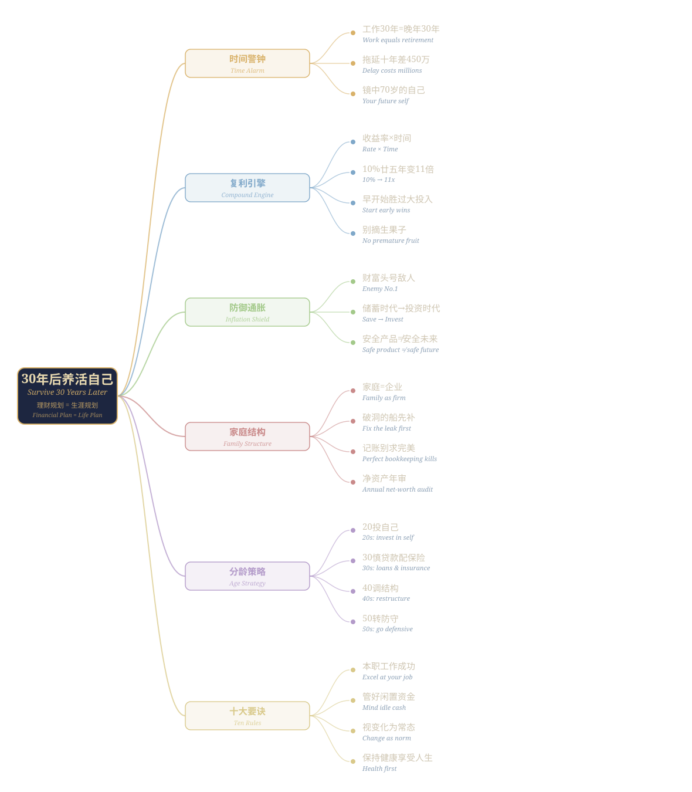

30年后，你拿什么养活自己？
〇 · 书籍信息
基本信息
| 书名 | 《30年后，你拿什么养活自己？》——原著 Thirty Golden Years without Financial Worries，韩国现象级理财启蒙书 |
|---|---|
| 作者 | 三位韩国顶级理财规划师（CFP）合著：高得诚（SC第一银行PB业务负责人）、郑成镇、崔秉熙——把枯燥的退休金测算，包装成一场35岁主管的「预知梦」 |
| 结构 | 5 章：Chapter1 时间警钟 → Chapter2 投资方法 → Chapter3 复利与风险 → Chapter4 八道关卡 → Chapter5 十大要诀——故事线推剧情，知识点全藏在对话里 |
| 体裁 | 寓言体理财书：主角钱小俊在梦中看见70岁的自己住进政府养老院——全书的第一推动力不是数字，是恐惧 |
| 一句话 | 工作时间30年，晚年时间也是30年——你必须用收入的一半为那30年买单；而复利是唯一肯替你加班的东西。 |
一 · 核心主题总览
一场预知梦里埋着四组母题：① 时间的不对称
工作时间 30 年，晚年时间 30 年——书的全部紧迫感来自这个等式。这意味着仅靠工资的一半储蓄才够养老，而房贷、教育金还没进场；拖延十年的代价被精确算出：600 万变 141 万。
② 复利是唯一的朋友
爱因斯坦式的名言被反复引用：收益率与时间是复利的两条腿——年 10% 25 年变 11 倍，年 20% 25 年变 95 倍；但投资两三年就想看到复利，等于摘生果子。
③ 通胀是沉默的对手
财富增长最危险的敌人是物价上涨：年利 4.5% 的储蓄在 3% 通胀下 25 年后只是保本。书里把「安全的产品」与「安全的未来」切开——这是全书最反直觉的一刀。
④ 家庭即企业
王经理的比喻：丈夫是法人代表，妻子是 CFO——结构不佳的家庭财务像一艘有破洞的船，赚再多也会漏光；先补洞，再谈增长。
二 · 第一段 梦 · 70 岁的清晨—— 镜中老人 · 养老院 · 财富精灵 ——
镜子里不是自己
35 岁的钱小俊是外人眼中的赢家：大公司主管、夫妻年薪 40 万、房子大幅增值。但发薪日的工资卡先还信用卡再还房贷，「这么多钱都跑哪里去了」。一觉醒来，镜子里是白发老人——2041 年，他 70 岁，住在政府运营的养老院，与妻子的养老靠子女脸色。作者的叙事策略：先让读者「住进」70 岁那年，再回头算账——恐惧比道理更早抵达。
◆ 语言学习 · 概念 · 时间警钟
| 退休生活资金 | 退休后全部生活费的折现总额——书中的算法：月支出 × 12 × 晚年年数，还不含教育与医疗 |
|---|---|
| 净资产 | 总资产 − 总负债。钱小俊统计完只有 123 万——婚后 7 年每月仅攒下 5300 元 |
| 理财规划=生涯规划 | 全书的总纲：理财不是赚钱技巧，是人生阶段的排期表 |
| 治富 | 书中谐音梗：「致富」的升级写法——先治心（对钱的认知），再致富 |
句型 ｜ 「过去辛苦是为了现在，现在的劳累是为了将来的安乐」——书用三段递进把「吃苦」重定向到养老：苦不是美德，是分期付款的首付。
200 万与 400 万的账单
编者序里的算术最狠：30 岁的人 55 岁退休、活到 80 岁，按 4% 通胀算，25 年退休生活至少 200 万，夫妻合计 400 万——而且这还不含买房买车与子女教育。30 岁起每月投 1000 元，60 岁可得 600 万；拖到 40 岁才开始，只剩 141 万。「只是推迟 10 年，你的收入相差至少 450 万」——拖延被标出了价格。
◆ 语言学习 · 算术 · 拖延成本
| 通货膨胀率 | 物价年均涨幅——书按 4% 计算：25 年后维持同等生活需要 2.66 倍的钱 |
|---|---|
| 阶梯储蓄法 | 刘彦斌序里的土办法：5 万拆成 1/2/3/4/5 年期各 1 万，到期后全转 5 年期——流动性与高利率兼得 |
| 年金保险 | 活多久领多久的保险形态——本质是长期储蓄，用于对冲「活得太久」的风险 |
| 替代率 | 养老金对退休前工资的替换比例——书中不点名，但整个测算都是替代率的通俗版 |
习语 ｜ 「机会只留给准备好『治富』的人」——把「有准备的人」改成「治富的人」，一字之差把理财前置到认知层；「留足过冬的粮食比什么都重要」——书自己的防火墙金句。
三 · 第二段 复利 · 餐巾纸上的魔法—— 收益率 · 时间 · 生果子 ——
烤肉店里的复利课
朋友宋思凡与王伟在烤肉店给钱小俊上复利课：年 10% 单利 25 年是 250%，复利却是 11 倍；年 20% 复利 25 年约 95 倍。这一段的贡献不是数字，是祛魅：钱小俊当场兴奋过头，朋友立刻泼冷水——「你能保证 25 年每年 20% 吗？」复利的神话与复利的纪律，在同一张餐巾纸上。
◆ 语言学习 · 概念 · 复利引擎
| 复利 | 利息计入本金再滚利——书强调两条腿：收益率与时间，缺一不可 |
|---|---|
| 单利 | 只按本金计息——25 年累计 250%，对照组 |
| 核心投资组合 | 书中思路的隐含词：能长期持有、享受复利的主体仓位 |
| 几何级数 | 复利增长的形态：收益率每抬一档，终值爆炸式拉开 |
句型 ｜ 「复利与时间的关系就如同树木与养分一样，一开始其缓慢的速度会令人着急」——书把复利写成植物学：前五年几乎看不出差别，差别全部发生在你放弃之后。
生果子与早十年
「投资才两三年就期待复利效果，这与采摘还未熟透的果实没有什么差别。」另一记重锤来自时间表：各投 1 万元，早开始 5 年，30 年后 17.4 万对 25 年的 10.8 万——5 年的时间差值 6.6 万；先存 10 年再停手，胜过后存 20 年——本金一半，终值翻倍。
◆ 语言学习 · 概念 · 时间价值
| 时间价值 | 同额资金越早入场越值钱——书的核心变量 |
|---|---|
| 本金 | 复利的种子：书中反复强调「资金大树也是由一分一厘的种子生长而成」 |
| 提前量 | 理财规划的真正杠杆：不是金额，是起点 |
| 等待 | 复利最难的动作——书要求把储蓄期定在 20–30 年 |
习语 ｜ 「一寸光阴一寸金」被书改写成理财版：在复利语境里，这句话从修辞变成了会计科目。
四 · 第三段 防御 · 通胀与破洞的船—— 物价 · 账簿 · 家庭结构 ——
财富增长最危险的敌人
宋思凡的提问像考试：「财富增长最危险的敌人是什么？」答案不是股市崩盘，是物价上涨：年利 4.5% 扣税后 3.8%，25 年变 2.5 倍；通胀 3%，25 年物价 2.1 倍——账面增值，购买力原地踏步。书由此完成关键的思维转换：从储蓄的时代到投资的时代，风险是获得收益不可或缺的工具。
◆ 语言学习 · 概念 · 防御工事
| 实际购买力 | 名义金额 ÷ 物价——储蓄额上升而购买力不动，是书的「错觉」名场面 |
|---|---|
| 风险收益比 | 不承担风险就没有超额收益——书原话：「风险是获得收益不可或缺的工具」 |
| 闲置资金管理 | 要诀 7：躺在活期里的钱在通胀中每天贬值 |
| 财务状况表 | 要诀 9：每年做一次家庭资产负债表，像企业一样年审 |
句型 ｜ 「结构不佳的财务状况就好像一艘有破洞的船一样，如果钱一直流出去，那赚再多的钱也没用」——王经理的船喻把家庭财务企业化：先补洞、再扬帆；只产生费用的资产果断处理，只保留带来收益的资产。
家庭账簿与买车教训
记账的要点反直觉：「别想滴水不漏地记账」——追求完美是放弃记账的头号原因，账簿的目的只是看清金钱的整体流向。车的故事则是消费课：18 万的车三年只值 10 万，每月蒸发 2400 元——父亲那句叮嘱被验证：「买车子不是投资，只是一笔消费」。
◆ 语言学习 · 工具 · 账簿
| 家庭账簿 | 家庭收支流水账——书给出使用法：事先预算、标记选择性支出、全家一起记 |
|---|---|
| 选择性支出 | 可花可不花的钱——记账的目的就是把它标出来 |
| 净资产增长率 | 婚后 7 年每月 5300 元——钱小俊的真实增速，全书最扎心的数字 |
| 量入为出 | 致富的不二法门（原章节名）——四个字排在所有投资技巧之前 |
习语 ｜ 「钱一直流出去，赚再多的钱也没用」——漏船定律；「记住资金大树也是由一分一厘的种子生长而成」——书的复利童话语法。
五 · 第四段 分龄 · 十大要诀—— 二十投自己 · 五十转防守 ——
五步骤与四个十年
王经理登山时给出无忧人生 5 步骤：算净资产 → 算收支 → 算劳动年限 → 定退休标准 → 持续投资。随后按年龄段给药方：20 多岁投资自己；30 多岁慎用贷款并配保险；40 多岁调整资产结构、从整理债务开始；50 多岁把方向转向防守——理财被写成一份随年龄换挡的驾驶手册。
◆ 语言学习 · 方法 · 分龄策略
| 潜能开发 | 20 多岁最大的资产是自己——书中认为提高年薪比找副业更优先 |
|---|---|
| 风险保障 | 30 多岁的必修课：给家庭支柱配足保险，先保人再谈钱 |
| 结构调整 | 40 多岁关键词：从整理债务开始，保证退休生活资金的仓位 |
| 投资方向转移 | 50 多岁关键词：远离高风险产品，调低房产占比 |
句型 ｜ 「只有家庭的财务结构搭建得十分扎实，才可以指望家庭经济出现增长」——条件句写法暴露全书的次序观：增长是结果，结构是前提。
薪水族十大要诀
收尾的十要诀浓缩全书：本职工作成功、笑到最后、打败物价怪兽、越拖越贵、教育金与养老金均衡、「安全的投资产品不等于安全的未来」、管好闲置资金、视变化为常态、年审财务表、保持健康享受人生。最后一条是书留给读者的幽默：算了一整本书的钱，最终保单是你的身体。
◆ 语言学习 · 清单 · 要诀
| 吃钱怪兽 | 书对通胀的拟人化：它不偷不抢，只让你的钱慢慢变轻 |
|---|---|
| 均衡 | 教育金与养老金的争夺战——要诀 5：二者都是刚性支出，只能提前划账 |
| 变化 | 要诀 8 的关键词：视变化为常态，时刻做好准备 |
| 健康 | 要诀 10：最大的本金是身体——晚年医疗费是所有测算里无法封顶的一项 |
习语 ｜ 「笑到最后的人才是最终胜利者」——放在理财语境里指长期持有的耐性；「拖得越久，负担越大」——要诀 4：把拖延成本写成账面事实。
六 · 人物图鉴与成长弧线—— 主角配角 · 一张表看穿 ——
主要人物
钱小俊——35 岁公司主管，全书叙事者。弧线：忙碌而麻木 → 梦中变老 → 算账惊觉 → 开始记账与规划。他的转变不是被道理说服，是被「70 岁的自己」说服——书的读者代入装置
财富精灵——梦中引路人：带他看 70 岁的自己、算一生收支。功能是「未来的你」人格化——所有劝告都以预演形式出现
王经理——银行私人理财中心 VIP 客户经理，登山时把 5 步骤与家庭=企业的框架和盘托出——全书的方法论出口
宋思凡 / 王伟——钱小俊的朋友：一个讲复利数学，一个画餐巾纸表格——烤肉店二人组负责把「知识」翻译成「饭桌语言」
次要人物（功能位）
| 钱小俊的妻子 | 从「没达到过度消费吧」到一起记账——家庭财务共同决策的示范：结构调整不是一个人的事 |
|---|---|
| 郑志强（蜜猪） | 同事兼登山搭子——普通人的对照样本：还没开始想养老 |
| 移民加拿大的伯父 | 60 岁仍凌晨进货开花店——海外养老金制度的参照物：另一套体系里的人不必为晚年攒钱 |
| 钱小俊的父亲 | 「买车子不是投资，只是一笔消费」——一句话省下 8 万的老人智慧 |
七 · 主题与象征—— 每个道具都在说话 ——
| 镜子 ↔ 未来的自己 | 镜中白发老人：拖延的具象化——未来的你正在镜子里等你 |
|---|---|
| 餐巾纸 ↔ 知识的民主化 | 复利表格画在餐巾纸上：理财知识不需要讲堂，需要饭桌 |
| 破洞的船 ↔ 家庭现金流 | 结构性漏洞：收入再高，洞不补照样沉 |
| 生果子 ↔ 早期放弃 | 投资两三年就摘：复利死于不耐心 |
| 过冬的粮食 ↔ 储蓄 | 书名级意象：养老储备的本质是粮食储备，不是发财 |
八 · 写作手法赏析—— 怎么写，就能怎么学 ——
① 寓言体
用梦与预知装进退休金测算：恐惧先行，算术殿后——行为金融学的叙事化
② 对话教学
复利、通胀、保险全由朋友对话说出：把教科书改写成饭桌戏，知识零说教感
③ 数字钉子
600 万对 141 万、11 倍对 95 倍、5300 元月净资产增——每章一枚数字钉子，读完忘不掉
④ 分龄清单
20/30/40/50 四段各给产品与动作清单：把原理翻译成行为指南，工具书化收尾
九 · 名段欣赏—— 原文精读 · 逐段赏析 ——
十 · 金句摘录—— 14 条 · 中英对照 · 带出处 ——
"晚年时间大约为30年。而人一生的工作时间也是30年。"—— 前言
"当你一直说来不及却又不愿意开始的时候才真的来不及了。"—— 前言
"留足过冬的粮食比什么都重要。"—— Chapter1 目录
"理财规划就是生涯规划。"—— Chapter1 目录
"只是推迟10年，你的收入相差至少450万。"—— 编者序
"复利所具有的力量完全超越了人们的想象。"—— Chapter3 · 烤肉店复利课
"复利的力量来自两处，『收益率』和『时间』。"—— Chapter3
"投资才两三年就期待有复利效果，这与采摘还未熟透的果实没有什么差别。"—— Chapter3
"财富增长的最大敌人是物价上涨。"—— Chapter3
"风险是获得收益不可或缺的工具。"—— Chapter3 目录
"结构不佳的财务状况就好像一艘有破洞的船一样，如果钱一直流出去，那赚再多的钱也没用。"—— Chapter2 · 实现无忧人生5步骤
"买车子不是投资，只是一笔消费。"—— Chapter2 · 父亲的叮嘱
"安全的投资产品不等于安全的未来。"—— Chapter5 要诀6
"保持健康，享受人生。"—— Chapter5 要诀10
十一 · 拓展阅读—— 原文 · 词条 · 译文 ——
十二 · 个人感悟与心得—— 三点心得 ——
三点感悟
① 时间是最贵的本金
书里所有公式都指向同一件事：起点比金额重要。每月 1000 元不是重点，「30 岁开始」才是。对任何年收入的读者，这条都成立：越晚开始，同样目标所需的本金不是线性增加，是几何增加。
② 先修船，再扬帆
破洞的船喻值得贴在记账软件首页：收益率是帆，结构是船体。多数人热衷研究帆（买什么产品），从不检查船体（负债、无效支出、贬值资产）。书把次序摆正了。
③ 健康是最后一张保单
十大要诀以「保持健康，享受人生」收尾，看似俗套，实为闭环：晚年医疗费是所有退休测算中唯一无法封顶的变量——身体既是本金也是负债的开关。
这本书的全部内容可以压缩成一句话：用确定的小钱、早一点的时间，换不确定的大晚年。梦不等于预告，但账可以提前算。
十三 · 一页速查（复习用）
| 核心等式 | 工作时间 ≈ 晚年时间（各约 30 年）——收入的一半要预留给那 30 年 |
|---|---|
| 复利双腿 | 收益率 × 时间：10%/25 年 = 11 倍；20%/25 年 ≈ 95 倍；两三年就想收果=摘生果子 |
| 头号敌人 | 通胀：4.5% 利率在 3% 通胀下只是保本——从储蓄时代转向投资时代 |
| 家庭=企业 | 先看净资产与收支（补洞），再谈增长；账簿别追求完美，看清流向即可 |
| 分龄换挡 | 20 投自己 / 30 慎贷款配保险 / 40 调结构整债务 / 50 转防守 |
十四 · 全书思维导图—— 一图纵览 ——

一图纵览全书骨架 · 中英双语对照 · 手机端可左右滑动查看全图